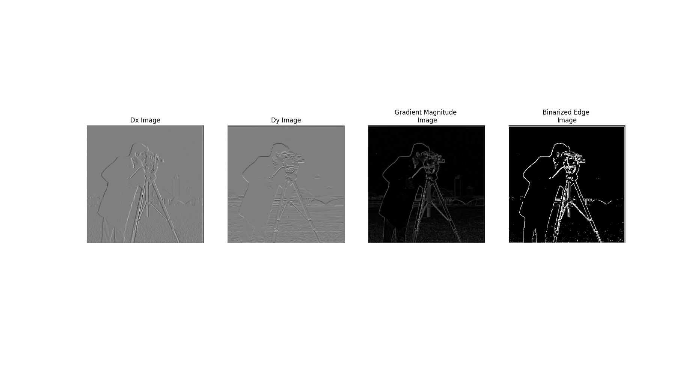

DoG Filters

In this section, I implemented convolutions on a selfie using different approaches: a naive 4 for-loop implementation, a 2 for-loop vectorized approach, and scipy's highly optimized convolve2d. The time taken for each approach demonstrates the impact of vectorization: the 4 for-loop version took 153.81 seconds, the 2 for-loop version took 11.59 seconds, and the convolve2d function took just 0.16 seconds. To maintain the same output size as the input image, I padded the image with zeros based on the kernel size.
Box Convolution on Image of Myself
Gradient Convolution on Image of Myself
The corresponding code snippets for padding, the 4 for-loop version, 2 for-loop version, and scipy's convolve2d implementation are shown below.
I calculated partial derivatives along the x and y directions using finite differences, producing a gradient magnitude image and a binarized edge image. Vertical edges are more pronounced in the x-derivative image, and horizontal edges are more pronounced in the y-derivative image. I computed the gradient magnitude as the square root of the sum of squares of the two derivatives, and the binary image used a threshold chosen to preserve most edges while removing noise.
Original Cameraman Image
I compared two procedures for applying Derivative-of-Gaussian filters. In procedure 1, I blurred the original image with a Gaussian, then convolved with Dx and Dy filters to compute the gradient magnitude and binarized edge images. In procedure 2, I first convolved the Gaussian kernel with Dx and Dy to create combined filters, then applied these to the original image. Both methods produced equivalent final results.
Procedure 1: Blurred Cameraman Image
Procedure 2: DoG Applied
DoG Filters
I implemented image sharpening using an unsharp mask. A blurred version of the image is subtracted from the original to isolate high-frequency components (edges), which are then scaled by a constant and added back to the original image. Sharpening a blurred image exaggerates edges and artifacts introduced by the blur, whereas sharpening a near-original image preserves natural details.
I also applied sharpening to a selfie of me to demonstrate edge enhancement.
I created hybrid images by combining a low-pass filtered image with a high-pass filtered image. Close-up views emphasize high-frequency details, while distant views emphasize low-frequency content. Examples include LeBron and Bronny James, as well as Tom Brady and Drake Maye.
LeBron and Bronny James Merged Together
FFT of Images
Tom Brady and Drake Maye Merged
Derek and His Cat Merged
Apple and Orange Merge

Tom Brady and Drake Maye Images Merged

LeBron and Bronny Jr Images Merged